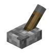
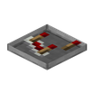

CREATE CODEX
机械动力图鉴
标签
源码
首页
/
标签
/ wrench pickup
#wrench pickup
create:wrench_pickup
标签
成员
37
安山栏杆
黄铜栏杆
铜栏杆
工业铁块
锈蚀的工业铁块
红石线
红石火把
红石中继器

拉杆
红石灯

红石比较器
侦测器
墙上的红石火把
活塞
黏性活塞
绊线
绊线钩
阳光探测器
标靶
漏斗
橡木按钮
云杉木按钮
白桦木按钮
丛林木按钮
金合欢木按钮
深色橡木按钮
绯红木按钮
诡异木按钮
红树木按钮
竹按钮
樱花木按钮
石头按钮
磨制黑石按钮
铁轨
动力铁轨
探测铁轨
激活铁轨
用到它的 Create 配方
本站收录的 Create 配方里没有用到它。